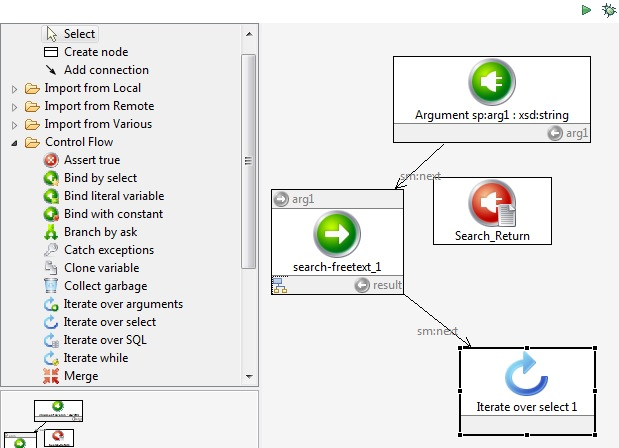
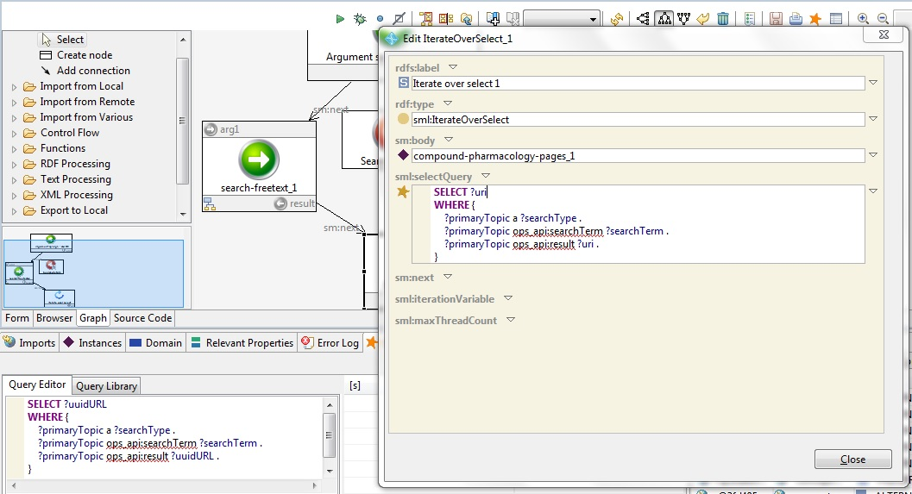
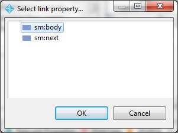

Taking the next step in your script
Using your query in a script
You've run a query against the results from the OpenPHACTS API. Now let's use that query to make more calls. In this example, we're going to loop over our results and make a call to compound-pharmacology-pages.
Find the module "Iterate over select" in the SPARQL Motion pallet on the left, and drag-and-drop it onto the canvas as you did earlier for search-freetext. Connect it up so that it follows search-freetext_1 in your script. When you're done, your canvas should look something like this:

In your SPARQL pane, you have the query you pasted from the OpenPHACTS documentation. Edit it so that only the result variable is SELECTed. Copy that query (ctrl-c). Now, double-click on the module you just created ("Iterate over select 1"), pull down the menu next to sml:selectQuery, and paste in your query. Change the name of the variable ?uuidURL to be ?uri (in both places in the query). Click OK next to your query, and your screen should look like this:

Click "Close" to finish editing your new module.
This module selects the the result APIs from the string search you did in the first API call. Now, we want to make a new call, to compound-pharmacology-pages, for each of these results. We can do this by dragging-and-dropping OpenPHACTS:compound-phamacology-pages on to the canvas, as we've done for other modules before. This time, when we connect it from our most recent module ("Iterate over select 1"), we are given a choice of whether this will be sm:body or sm:next. Since we are defining a loop, we can define the body of the loop, or what will follow it. In this case, we want to define the body of the loop to be the call to compound-pharmacology-pages, so we select sm:body.

This new module, compound-pharmacology-pages, has a number of possible parameters. You can see them all by double-clicking on the module you just created, and compare them to those listed in the OpenPHACTS API Documentation. In this script, we don't need to assign any of them - we have already selected the value of ?uri in our loop module, and this defines the only mandatory value for compound-pharmacology-pages (i.e., uri). So now we are ready to run our script.
Next: Running the script